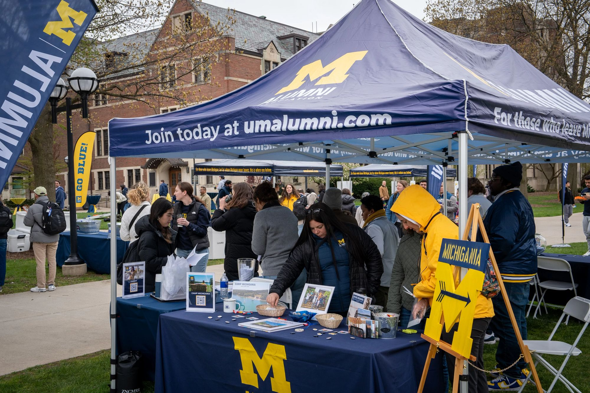
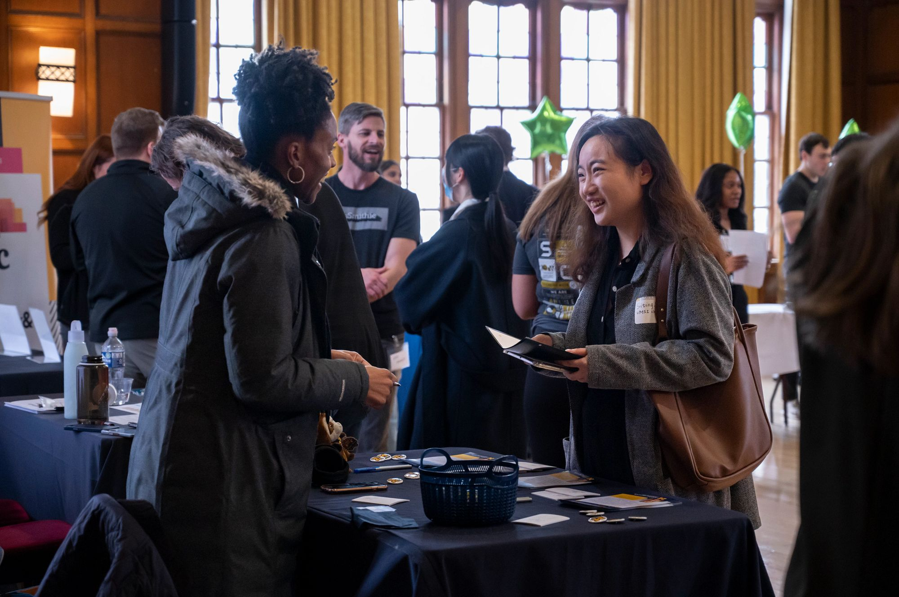

Why Network?
Networking is an essential part of making valuable connections and finding career accelerating opportunities. This page contains resources and guides to help you get started.
The Career Development Office offers an AI Prompt Guide that can aid you in gaining advice and finding networking resources.
Networking Tips
Define Your Networking Goals Are you exploring career options, seeking an internship, job, research opportunity, or mentorship? Try being specific, such as "Learn about data experience."
Create an Elevator Pitch An elevator pitch is a brief introduction of you career interests and goals. It is meant to engage listeners and help start conversations. Do you need help creating an elevator pitch? Here is an Elevator Pitch Checklist to help you get started.
Make a Networking Plan If you don't know where to begin with networking, The CDO has created the LAMPS List for Strategic Networking to help you get started.
Create Personal and Professional Networks One of the fastest ways to network is by connecting with people who are in your life already. Connect with friends and peers to create a Personal Network and connect with Mentors and Faculty to create a Professional Network.
Connect By Email Writing professional emails helps you connect to people of interest, reach out to recruiters, and follow up with professionals. But networking emails require some etiquette. Below we have provided you with a couple of resources to help write proper networking emails:
Once you send an email, you may get a response in the next few business days. If you dont receive a response in seven business days after sending your email, it's best to send a follow up email. You can find contact information for organizations at D&B Hoovers.Create a LinkIn Profile LinkedIn is an online platform made for professional networking. On it you can create a professional profile, write and read posts about you career, receive notifications tailored to career interests, and follow other people and organizations.
Networking Resources
Connecting with Alumni can help you learn the different possible pathways to take after graduate school. It will also help you build connections for your potential future career paths. It never hurts to start making these connections early, as they will help build a foundation of support in the future. Start finding alumni with the following resources: 
Career fairs are professional opportunities for students to meet with representatives from companies and organizations. Explore the resources below to find career fairs hosted by the University of Michigan. 
Professional Associations
Professonal organizations are a massive networks and many opporate at a national level. Many hold conferences and events. Take a look below at the associations that align with your career interests:
Data Science
User Experience